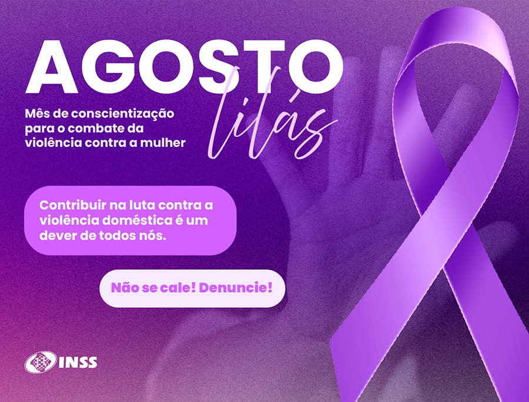

O "Agosto Lilás" é uma campanha nacional de conscientização e combate à violência doméstica contra a mulher, que ocorre durante todo o mês de agosto. A campanha foi criada em referência à Lei Maria da Penha, sancionada em 7 de agosto de 2006, que estabeleceu mecanismos para coibir a violência doméstica e familiar contra a mulher. O objetivo principal do Agosto Lilás é conscientizar a população sobre a importância de denunciar casos de violência e fortalecer a rede de proteção à mulher, incentivando a busca por ajuda e apoio.
A campanha utiliza a cor lilás como símbolo, associada à luta contra a violência de gênero e à conscientização sobre os direitos das mulheres. Durante o mês, diversas ações são realizadas em todo o país, como eventos informativos, palestras, rodas de conversa e campanhas de divulgação, com o objetivo de alcançar o maior número possível de pessoas e sensibilizá-las sobre a importância de combater a violência doméstica.
A Lei Maria da Penha, marco na luta contra a violência doméstica, completou 19 anos em 2025, e o Agosto Lilás reforça a importância de sua aplicação e da garantia dos direitos das mulheres. A campanha busca também desmistificar a violência doméstica, mostrando que ela pode ocorrer de diversas formas, incluindo violência física, psicológica, sexual, patrimonial e moral.
